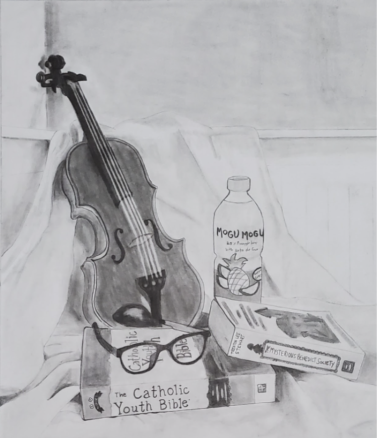

To begin with, I love reading, playing the violin, singing, and baking banana bread and cookies. What I believe to be one of the most important things for me is my education, and my computer science portfolio will display all that I have learned while taking this class, reveal the improvement of my digital literacy, and demonstrate how I have used my creativity to create programs that are interesting, fun, and useful. Before taking a computer science class, I did not know anything about making your own website or game using code. Now, I can do all of that and more, including the ability to bring my more complex ideas to life. At first, I did not want computer science to be one of my classes, but over time, as I completed more projects, I found coding games and websites very fun. I liked seeing my ideas and designs work out and come to life, even if it did require a lot of research and problem-solving. While computer science is still not one of my main career choices, it did become an interesting subject that I hope to dabble in occasionally.
